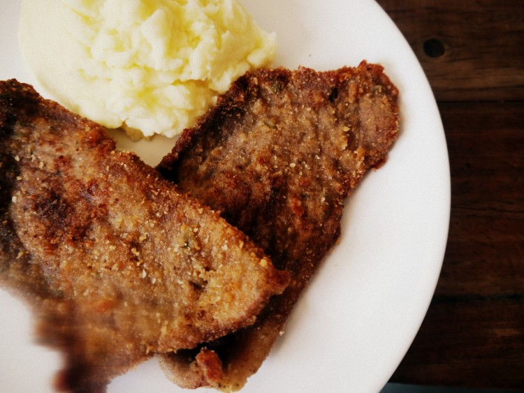

Receta para una buena milanga

.
La milanesa es un filete, normalmente de carne vacuna, rebozado, que se cocina frito o al horno.
por lo que existen milanesas de cerdo, de pollo, de filetes de pescado, de soja, de berenjena o de mozzarella, entre otros ingredientes.
Ingredientes
- 8 milanesas pequeñas (yo las hice de cuadrada, pero puede ser lomo, bola de lomo, peceto, etc.)
- Pan rallado
Para la marinada:
- 2 huevos
- 1 cda. de mostaza de Dijon
- Jugo y ralladura de 1 limón
- 1 diente de ajo
- Perejil picado
- 1 cda. de queso rallado
- Sal y pimienta
instrucciones
- Lo primero que vamos a hacer es batir los huevos y agregar dentro todos los ingredientes de la marinada. Vamos a mezclar todo bien.
- Siguiente: Vamos a salar las milanesas y colocarlas dentro de la marinada, tienen que quedar bien embebidas. Las vamos a tapar con papel film y las vamos a llevar a la heladera mínimo por una hora. Cuanto más, mejor.
- Pasado ese tiempo, vamos a sacarlas de la heladera. Luego, milanesa por milanesa,, vamos a empanarlas con el pan rallado, presionando de ambos lados hasta que las recubra bien.
- Finalmente, lo que queda es freírlas en aceite bien caliente hasta que estén doradas y disfrutarlas mucho.
Volver